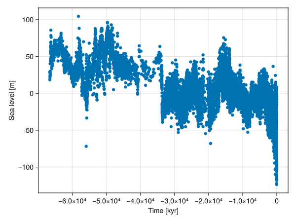
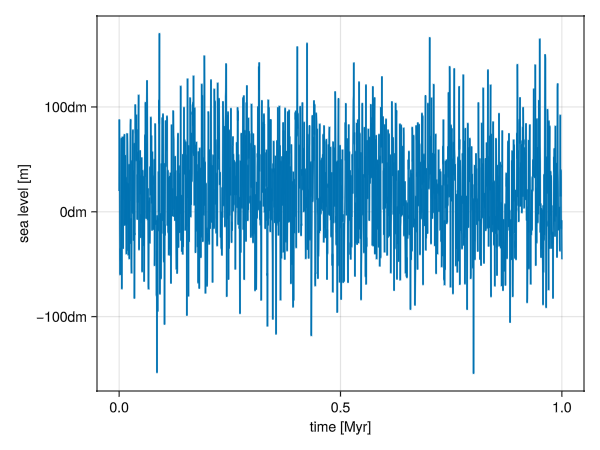

Input Methods
Every model in CarboKitten has its own specific needs in terms of input. However, there are many common idioms used here.
Sea level
The sea level curve is probably the input parameter that is most often of interest. CarboKitten expects the sea level to be passed on as a function of time. So time must also be defined. In the tutorial you find the following example:
time = TimeProperties(
Δt = 500u"yr",
steps = 2000
)To retrieve the range of times which will be written as the model output, one can use the time_axis() function.
Sea level from file
Reading a single vector of numbers from a example.txt file in the data folder (it will be similar for other formats):
dir = "data"
filename = joinpath(dir, "example.txt")
sea_level = readdlm(filename, '\t', header=false) * u"m"Remember that the topmost value in the file will be the first one to be read. In geological datasets this is often the youngest value, but because CarboKitten is a forward model, the first value in the vector of sea level values will be the one used first, so effectively the oldest. Sort your sea level values in the order of decreasing age, or oldest first, for CarboKitten to read them correctly.
Consider several situations involving the file with the values of sea level and the model run:
1. The file has regularly spaced (equidistant) observations
Whether the temporal resolution is lower, the same or higher than the model step, we recommend using linear_interpolation from the package Interpolations.jl or an equivalent function. You will have to interpolate the values to the density determined by Δt.
Running a model at a resolution higher than the resolution of the sea level data
The model may give nicer results at lower Δt than the resolution of the empirical sea level data. This will require "making up" data by interpolation. Keep in mind that scientifically you don't know what happened at the interpolated points, so the sea level curve and the carbonate platform generated will be smoother than they would have been if the sea level had been measured at this resolution. You may use the parameter write_times from the component TimeIntegration to model at a higher temporal resolution, but save the results only at a resolution of the input data.
using Interpolations
SL = linear_interpolation(time_axis(time), sea_level)2. The file has irregularly (not equidistant) observations
2.1. Interpolation on irregular grid
Take the example from the tutorial:
using CarboKitten.DataSets: miller_2020
miller_df = miller_2020()
using Interpolations
sort!(miller_df, [:time])
miller_sea_level = linear_interpolation(miller_df.time, miller_df.sealevel)This works even though miller_df.time is not equally spaced, which is why this function is very safe if you change your input data a lot. But what happens under the hood is that extrapolation according to the method that is default for linear_interpolation. It may not be the best method for your data, so we recommend checking that and reporting on the type of interpolation used.
2.2. Local regression (loess)
Loess, or "Locally Estimated Scatterplot Smoothing", is very popular among geoscientists. The Smoothers.jl package needs to be installed for this to work (Pkg.add("Smoothers")).

It should work as follows:
#| creates: docs/src/_fig/loess.png
#| collect: figures
module Script
using CarboKitten
using Unitful
using CarboKitten.Components
using CarboKitten.DataSets: miller_2020
using Smoothers
using GLMakie
GLMakie.activate!()
function main()
miller_df = miller_2020()
sort!(miller_df, [:time])
sl = miller_df.sealevel / u"m" .|> NoUnits
ti = miller_df.time / u"kyr" .|> NoUnits
fig = Figure()
ax = Axis(fig[1,1], xlabel="Time [kyr]", ylabel="Sea level [m]")
scatter!(ax, ti, sl)
lines!(ax, ti, Smoothers.loess(ti, sl, q = 1000)(ti); color = :tomato)
save("docs/src/_fig/loess.png",fig)
end
end
Script.main()Choosing the q parameter proves difficult. Although the package Smoothers.jl indicates the default value will be estimated, in practice it seems to often result in NaNs. So always plot the result of smoothing to check it has been done correctly.
Inline functions
If the function is very simple, you can enter it as an inline anonymous function (also known as a lambda). The following would generate a sinusoid with an amplitude of 10m and a period of 100,000 years.
const INPUT = Input(
...
sea_level = t -> 10.0u"m" * sin(2pi / 100.0u"kyr")
...)Stochastic functions
Functions can capture pre-generated data, so you can generate a stochastic sea-level curve for use in CarboKitten. There are multiple stochastic processes available in DiffEqNoiseProcess.jl and some of them may be relevant for modeling sea level. This example uses OrnsteinUhlenbeckProcess, which is a continuous time equivalent of an AR(1), but here calculated for specific positions determined based on the temporal resolution of the model, set in TIME_PROPERTIES.
The outcome looks like an AR(1) process:

#| creates: docs/src/_fig/OU.png
#| collect: figures
module Script
using CarboKitten
using Unitful
using CarboKitten.Components
using GLMakie
using Random
GLMakie.activate!()
const TIME_PROPERTIES = TimeProperties(
Δt = 500u"yr",
steps = 2000
)
function generate_ar1(mean, n, drift, variance)
"""
Arguments
- `mean`: Mean of the process
- `length`: Length of the process (number of steps)
- `drift`: Drift parameter
- `variance`: Variance of the process
"""
ar1 = Vector{Float64}(undef, n)
ar1[1] = mean # start with the mean for simplicity
for i in 2:n
ar1[i] = drift * ar1[i-1] + (1 - drift) * mean + randn() * sqrt(variance)
end
return ar1
end
const θ = 0.4 # drift
const μ = 2.0 # mean
const σ = 20 # variance
function main()
OU = generate_ar1(μ, length(time_axis(TIME_PROPERTIES)), θ, σ)
fig, ax = lines(time_axis(TIME_PROPERTIES) |> in_units_of(u"Myr"), collect(OU) .* u"m")
ax.xlabel = "time [Myr]"
ax.ylabel = "sea level [m]"
save("docs/src/_fig/OU.png",fig)
end
end
Script.main()